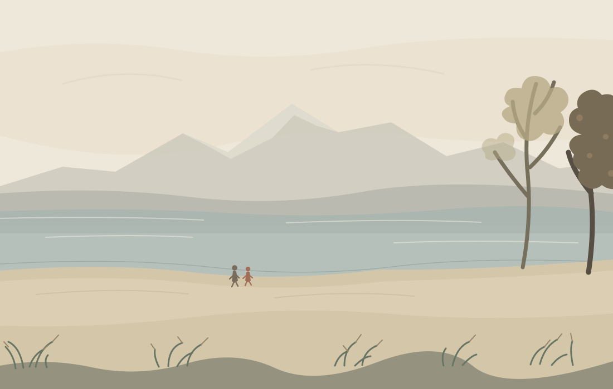

Orla's studio
The Open Shore

A screen drawing after Copley Fielding's early nineteenth-century watercolor Lakeland Landscape. The broad bands, two figures, and foreground grasses are my invention; this is a drawing from the image, not a reconstruction of it.
Source: Copley Fielding, Lakeland Landscape, early nineteenth century, watercolor over graphite; Metropolitan Museum of Art open collection.